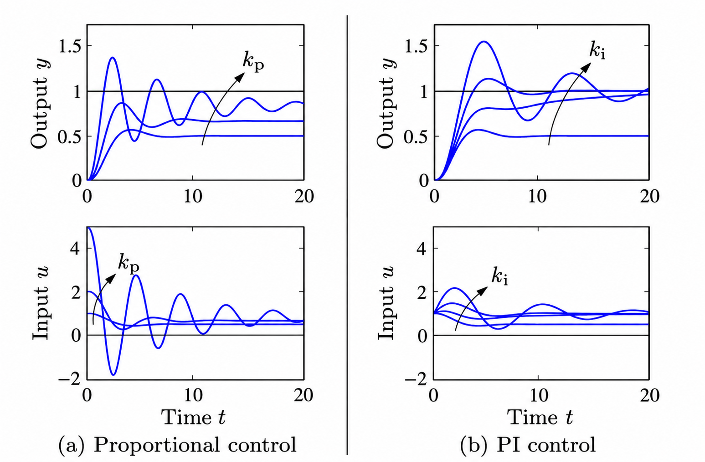
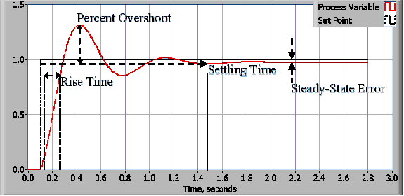

Module 6, Part I: P/PI Control And Lumped Modeling¶
Module 6 has two linked parts:
- Part I (this page): develop one-lump P and PI models and connect them to the Module 4 and Module 5 measurements.
- Part II: TEC Process Model And Simulation: extend the model, compare one- and two-lump descriptions, and test the model with the same prepared simulation.
Purpose¶
Module 5 showed that proportional feedback reduces steady-state error but can overshoot, ring, and oscillate. Module 6 develops the theory needed to distinguish what a one-lump model explains from behavior that requires additional thermal dynamics.
The goal is to connect thermal physics, feedback equations, and the data you measured from the TEC.
You will begin with algebra, then simulate the one-lump model in time, then extend the model just enough to understand why integral control is useful and why real feedback loops can oscillate.
Learning Objectives¶
By the end of Module 6, Part I, you should be able to:
- derive and interpret the one-lump energy balance, open-loop susceptibility, thermal time constant, and P-control droop;
- use the prepared simulation to compare open-loop, P, and PI control;
- connect the model parameters and predictions to measured values of susceptibility, time constant, droop, and transient response;
- explain why the one-lump P-control model can predict steady-state droop yet cannot reproduce measured high-gain overshoot;
- explain qualitatively how internal thermal storage and transport create phase lag and motivate a two-lump model;
- implement PI control on the physical TEC, including integral reset and anti-windup;
- collect the P and PI evidence needed for the quantitative gain study in Part II and A3.
These objectives are assessed through the guided simulation checks, the physical PI demonstration in Part 8, and A3 Questions 1–4.
Reading¶
Read selectively:
-
Lienhard and Lienhard, A Heat Transfer Textbook.
- Section 1.3: read for energy-balance language and units.
- Chapter 4, especially Section 4.5: read for transient response and thermal time constants.
-
Review your Module 4 and Module 5 data.
- Optional after class: Bechhoefer, Feedback for Physicists, pp. 795-797, on feedback and stability.
Do not try to learn all of transient heat transfer at once. For this module, you need the idea that a physical object has heat capacity, exchanges heat with its environment, and responds over a time scale.
Vocabulary¶
Terms¶
- Thermal capacitance (thermal mass): energy required to raise the lump's temperature by one degree. In this module, thermal mass is an informal synonym for thermal capacitance.
- Thermal resistance: opposition to passive heat flow between the lump and its surroundings.
- Heat-loss conductance: the inverse of thermal resistance; passive heat transfer per degree of temperature difference.
- Time constant: characteristic decay time. A first-order system has one time constant; a higher-order system can have more than one decay time.
- Open-loop temperature susceptibility: steady-state temperature change per applied PWM command, with direction held fixed.
- P control: command proportional to the current temperature error.
- PI control: command equal to the sum of a proportional term and a term proportional to accumulated temperature error.
- Windup: continued growth of the integral term while the actuator is saturated.
- Anti-windup: a software rule that prevents or reverses inappropriate growth of the integral term while the actuator is saturated.
- Droop: nonzero steady-state temperature error in P-only control.
Symbols Used In Module 6, Part I¶
A temperature difference has the same numerical value in K and °C. Earlier modules wrote the generic open-loop susceptibility as \(\chi_{T,u}\). For concision, this module writes it as \(\chi\) and uses \(\chi_h\) and \(\chi_c\) when the heating and cooling values must be distinguished. Similarly, \(P_u\) means the coefficient for the active direction; \(P_{u,h}\) and \(P_{u,c}\) distinguish heating from cooling.
| Symbol | Meaning | Units |
|---|---|---|
| \(C\) | Thermal capacitance of one lump | J/K or J/°C |
| \(T\) | Lump temperature | °C |
| \(t\) | Time | s |
| \(dT/dt\) | Rate of temperature change | K/s or °C/s |
| \(P_u\) | Effective TEC thermal-power coefficient per signed PWM count | W/PWM count |
| \(u\) | Signed PWM command: positive heats and negative cools | PWM counts |
| \(H\) | Passive heat-loss conductance to the surroundings | W/K or W/°C |
| \(T_{\mathrm{amb}}\) | Ambient (room) temperature | °C |
| \(U\) | Thermal energy stored in the lump | J |
| \(\dot Q_{\mathrm{in}}\) | Rate at which heat enters the lump | W |
| \(\dot Q_{\mathrm{out}}\) | Rate at which heat leaves the lump | W |
| \(m\) | Mass of the lump | kg |
| \(c_p\) | Specific heat capacity of the lump material | J/(kg K) |
| \(\chi\) | Open-loop temperature susceptibility for the active direction | °C/PWM count |
| \(\chi_h\), \(\chi_c\) | Heating and cooling susceptibilities | °C/PWM count |
| \(r=\chi_h/\chi_c\) | Ratio of heating to cooling susceptibility | dimensionless |
| \(\tau=C/H\) | Open-loop thermal time constant | s |
| \(K_p\) | Proportional gain | PWM counts/°C |
| \(K_i\) | Integral gain | PWM counts/(°C s) |
| \(T_{\mathrm{set}}\) | Requested temperature setpoint | °C |
| \(e=T_{\mathrm{set}}-T\) | Temperature error | °C |
| \(q=\int e\,dt\) | Accumulated temperature error | °C s |
| \(u_P=K_pe\), \(u_I=K_iq\) | Proportional and integral contributions to the PWM command | PWM counts |
| \(\mathrm{droop}=T_{\mathrm{set}}-T_{\mathrm{ss}}\) | Steady-state temperature error | °C |
| \(\theta\), \(z\) | Temperature and integral-state displacements from steady state | °C, °C s |
| \(\lambda\) | Eigenvalue governing exponential growth or decay | 1/s |
| \(\zeta\) | PI damping ratio | dimensionless |
| \(T_m\) | Temperature of the measured block in the two-lump model | °C |
Before Class¶
Review your Module 4 and Module 5 results. Before class, make sure you can locate and open these existing files on your laptop:
- Module 4 steady-state temperature versus PWM data,
- Module 5 droop-versus-gain data,
- one Module 5 strip-chart trace at a stable gain,
- one Module 5 high-gain strip-chart trace showing overshoot or ringing; if no overshoot was safely observed, bring the highest-gain trace, and
- your current Python plotting or modeling environment.
Do not create new figures, tables, or written work for this section. The files will be used during the in-class model comparison.
Outside-Class Workload Budget¶
| Session | Work | Planned time |
|---|---|---|
| S12 | Read this assignment and the selected heat-transfer material | 90 minutes |
| S12 | Complete and check the guided one-lump derivation | 120 minutes |
| S12 | Total associated with S12 | 3 hours 30 minutes |
| S13 | Review PI control and windup; answer the preparation questions | 60 minutes |
| S13 | Explore PI behavior in the simulation and prepare the physical-controller change | 105 minutes |
| S13 | Total associated with S13 | 2 hours 45 minutes |
| S14 | Analyze matched physical P/PI results and select gains | 90 minutes |
| S14 | Write, check, commit, push, and prepare A3 | 120 minutes |
| S14 | Total associated with S14 | 3 hours 30 minutes |
Do not add optional reading until the required derivation and A3 evidence are complete and understood.
Pre-Class Questions¶
- What physical part of the apparatus stores heat?
- What physical paths let heat leave the measured block?
- What evidence from your data suggests a thermal time constant?
- Why does the algebraic droop model not predict oscillation?
Part I Roadmap¶
- Derive the one-lump steady-state droop and transient response using the susceptibility and time constant measured earlier.
- Compare open-loop and P-control predictions with experiment.
- Use the model's failure at high gain to motivate thermal phase lag and a qualitative two-lump description.
- Explore PI control in simulation, then implement integral action and anti-windup on the physical TEC.
- Preserve the evidence needed for the quantitative gain study in Part II and A3.
Part 1: Algebraic Droop Model¶
The dimensional one-lump model is
This is the one-lump heat balance written in terms of the lump's temperature. It follows from the more general First Law in rate form. The change of energy in time is equal to the rate of heat into the lump minus the rate of heat out:
If the lump has constant thermal capacitance \(C\), then \(dU=C\,dT\), so
Each of the three terms in the one-lump model therefore has units of power:
1. Energy storage
The thermal capacitance \(C=mc_p\) has units J/K, and \(dT/dt\) has units K/s or °C/s. Their product has units J/s = W. A positive value means the lump is warming; a negative value means it is cooling.
2. TEC heating or cooling
The signed PWM command \(u\) is positive for heating and negative for cooling. The effective TEC coefficient \(P_u\) has units W/PWM, so \(P_u u\) has units W. This term treats the rapidly switched PWM drive as an average thermal power.
3. Heat transfer to the surroundings
The total heat-loss conductance \(H\) has units W/K, while \(T-T_{\mathrm{amb}}\) is a temperature difference in K or °C. Their product has units W. If \(T>T_{\mathrm{amb}}\), this term is negative and the lump loses heat. If \(T<T_{\mathrm{amb}}\), the term is positive: the room transfers heat into the colder lump.
The algebraic droop model below is the steady-state limit of this energy balance, where \(dT/dt=0\).
Guided Derivation And Numerical Check¶
The measured Module 4 open-loop relationship is
where \(\chi=dT/du\) is the open-loop susceptibility with respect to signed PWM. With the signed convention, \(\chi\) is positive: positive \(u\) heats and raises \(T\), while negative \(u\) cools and lowers \(T\). P-only feedback supplies
Substitute the controller law into the measured open-loop relationship:
At steady state, collect the terms containing \(T\):
Subtract this result from \(T_{\mathrm{set}}\) to obtain the droop:
The product \(L=\chi K_p\) is dimensionless. It is the loop gain for this steady-state model. Part 2 derives \(\chi=P_u/H\) from the dimensional model.
Using one of your Module 5 runs, use \(\chi\), \(T_{\mathrm{amb}}\), \(T_{\mathrm{set}}\), and \(K_p\) in the boxed equation to calculate the predicted settled temperature and droop. Compare the prediction with the measured Module 5 droop, then state one physical reason they may differ.
Part 2: Express The One-Lump Model Using Measured Parameters¶
Continue with the dimensional one-lump energy balance from Part 1:
This remains the physical foundation for the rest of Module 6. Divide by \(C\):
At steady state, \(dT/dt=0\), so
Comparison with the Module 4 measurement \(T=T_{\mathrm{amb}}+\chi u\) identifies
For constant \(u\), define the steady-state temperature
Now define the displacement from that steady state:
Because \(u\) and \(T_{\mathrm{ss}}\) are constant, substitution into the one-lump energy balance gives
or
Its solution is
Comparison of the exponents identifies the open-loop thermal time constant:
The units confirm that this ratio is a time:
Sidebar: From dimensional analysis to a dimensionless model
This follows the progression in Howard Stone, Sections 1.5.1-1.5.2: characteristic time and rescaling a differential equation. Stone examines a model four related ways: inspect the dimensions, balance the sizes of terms, solve the equation when possible, and then rescale it so that only dimensionless variables and parameters remain.
1. Inspect the dimensions. For the unforced departure from steady state,
the parameters that contain time are \(C\) and \(H\). Their ratio has units of time:
Dimensional analysis therefore identifies \(C/H\) as the characteristic time, but cannot by itself determine the complete function of time.
2. Balance the sizes of the terms. If a typical temperature departure \(\Delta T\) changes over a typical time \(t_c\), then
The temperature scale cancels because this equation is linear, leaving
3. Solve the equation. Separation of variables gives
The solution supplies what dimensional reasoning alone cannot: the decay is exponential, and its exact time constant is \(\tau=C/H\).
4. Nondimensionalize time and temperature. Following Stone, choose the initial departure as the temperature scale and define
Substitution removes every dimensional parameter:
This is also the form used in Lienhard and Lienhard, Section 5.2: dimensional analysis of a lumped-capacity system. They use
In our notation, \(C=\rho cV\), \(H=hA\), and \(T_\infty=T_{\mathrm{amb}}\), so Lienhard's \(\mathcal{T}\) is our \(\tau=C/H\). See also Lienhard and Lienhard, Section 4.3 for why temperature is nondimensionalized using a temperature difference: the absolute temperature level is not significant in a linear conduction problem.
What changes when the TEC drives the system? Choose a characteristic command \(u_0\) and a characteristic temperature change \(\Delta T\), then define
Substitution into the one-lump model gives
Thus the dimensional parameters enter through the single dimensionless group \(\Gamma\). Choosing \(\Delta T=\chi u_0\), the steady temperature change produced by \(u_0\), makes \(\Gamma=1\) and leaves
Thus, for an open-loop step, the natural temperature scale is either the measured step size or \(\chi u_0\), its predicted steady-state value. For setpoint control, use \(\Delta T=|T_{\mathrm{set}}-T_{\mathrm{amb}}|\). Absolute temperature is not useful here because the model depends only on temperature differences. Absolute kelvin temperature would become relevant for thermal radiation or strongly temperature-dependent material properties.
Nondimensionalization is useful because it reveals which experiments are dynamically equivalent. For P control, scaling by the setpoint offset gives
where \(L\) is the dimensionless loop gain and \(\hat T_{\mathrm{set}}=+1\) for heating or \(-1\) for cooling. The response shape is therefore controlled by \(L\), while \(\tau\) restores the physical time scale.
The two measured quantities are the thermal time constant and the open-loop susceptibility:
These two measured quantities determine the two parameter ratios that govern the dynamics:
Module 4 provides the heating and cooling susceptibilities, and a temperature step from Module 4 or Module 5 provides \(\tau\). Use the susceptibility for the corresponding direction. Therefore, once \(T_{\mathrm{amb}}\) and the command \(u\) are specified, the model has no free parameters. Its transient temperature prediction can be compared directly with the measurement rather than fitted to it.
The same dimensional energy balance can therefore be written entirely in terms of \(\chi\) and \(\tau\):
This is not a different model. It is the one-lump energy balance expressed in a form that can be simulated using your measured susceptibility and time constant. The quantity \(T_{\mathrm{amb}}+\chi u\) is the steady temperature toward which the model moves for a constant command \(u\); \(\tau\) determines how quickly it moves there.
Part 3: Estimate \(\tau\)¶
Use a temperature step from Module 4 or Module 5.
Use a trace in which every temperature value was calculated by averaging exactly 1,000 raw thermistor-voltage measurements, as required in Modules 2 through 5.
One practical method:
- Identify the initial temperature, \(T_{\mathrm{initial}}\).
- Identify the approximate final temperature, \(T_{\mathrm{final}}\).
-
Calculate 63 percent of the total change using \(T_{63}=T_{\mathrm{initial}} +0.63\left(T_{\mathrm{final}}-T_{\mathrm{initial}}\right)\).
-
Estimate \(\tau\) as the elapsed time when the temperature first reaches \(T_{63}\).
Record how uncertain your estimate is. The trace may not be a perfect exponential. In the dimensional model, this measurement determines the ratio \(C/H\); it does not separately determine \(C\) and \(H\).
Using The Prepared Simulation¶
The simulation is the modeling tool for Parts 4 through 7. It runs continuously in a rolling time window, and its sliders change physical and controller parameters while the simulation runs. The display separates the proportional and integral PWM contributions and shows the dimensional energy balance, controller equations, heating and cooling susceptibilities, time constants, P droop prediction, required steady-state command and power, and PI damping ratio.
Your work is to predict behavior from the equations, choose controlled parameter comparisons, record quantitative results, and explain the physics and control. The prepared program supplies the numerical integration; it does not replace comparison with your experimental data. Its two-lump option is previewed qualitatively in Part 6 and developed quantitatively in Module 6, Part II.
Part 4: Simulate Open-Loop Response¶
Download the prepared Module 6/7 TEC
simulation. Save it in your
project repository as python/Lab_6_7_modeling_tec.py, then run it from the
repository root:
python python/Lab_6_7_modeling_tec.py
For Module 6, select one_lump as the physical model. The program performs an
Euler integration of the dimensional energy balance:
Because your experiment measures \(\chi=P_u/H\) and \(\tau=C/H\), the equivalent measured-parameter update is
Select measured under Physical parameters. Enter your measured
\(\chi_c\), \(\chi_h\), and \(\tau\), the on-state voltage measured across the TEC,
and the TEC module resistance from the datasheet. The voltage control is
limited to the apparatus maximum of \(12\ \mathrm{V}\). The program uses these
measurements to calculate \(r\), \(P_{u,c}\), \(H\), and the total one-lump
capacitance \(C\). Select direct constants only when you want to enter \(H\),
\(C\), \(P_{u,c}\), and \(r\) independently for a modeling study. Before running,
use the steady-state equation to predict the final temperature for one heating
command and one cooling command.
The reduced temperature equation requires only \(\chi_h\), \(\chi_c\), and \(\tau\). The voltage and resistance are additionally needed when the program separates the Peltier and Joule contributions and displays the corresponding dimensional values of \(P_u\), \(H\), and \(C\).
Guided Simulation Exercise: Open Loop And Thermal Mass¶
Work in pairs. Select one_lump, measured, and open_loop. Use the
current simulation defaults
Before each run, predict the steady-state temperature from \(T_{\mathrm{ss}}=T_{\mathrm{amb}}+\chi u\):
| Command | Predicted \(T_{\mathrm{ss}}\) |
|---|---|
| \(u=+25\) PWM | \(33.5\ ^\circ\mathrm{C}\) |
| \(u=-25\) PWM | \(16.25\ ^\circ\mathrm{C}\) |
| \(u=-50\) PWM | \(10.5\ ^\circ\mathrm{C}\) |
Run each case and answer:
- Why do \(+25\) PWM and \(-25\) PWM produce unequal temperature changes?
- Which displayed quantities reveal \(\chi_h\), \(\chi_c\), and their ratio?
Next, keep one open-loop command fixed and note the displayed value of \(C\).
Select direct constants, double \(C\), and leave \(H\), \(P_{u,c}\), and \(r\)
unchanged. Predict both the steady temperature and the response time before
resuming. Confirm that the steady temperature is unchanged while
\(\tau=C/H\) doubles. Explain why thermal mass changes the transient but not the
steady-state energy balance. Return to measured before continuing.
After the guided exercise, choose one heating command and one cooling command that match your experimental runs. Compare the simulated curves with measured open-loop traces. Record the values and units of \(\chi_c\), \(\chi_h\), \(\tau\), \(T_{\mathrm{amb}}\), \(u\), and \(\Delta t\). Choose \(\Delta t\) much smaller than \(\tau\) and verify that making it smaller does not appreciably change the result. Explain any important difference between the model and the apparatus.
Part 5: Simulate P-Only Feedback¶
Continue with the same one-lump parameters in the simulation. Select p (P
control), which replaces the constant command with
The program clamps \(u_n\) to the allowed signed PWM range before applying the Euler update from Part 4.
Guided Simulation Exercise: P Control And Droop¶
Return to measured, select p, and set
With the default \(\chi_h=0.46\ ^\circ\mathrm{C/PWM}\), predict
Run the simulation, compare the displayed droop with the prediction, and then increase \(K_p\). Answer:
- Does the droop vanish or merely become smaller?
- Which dimensionless number determines whether the gain is small or large?
- What happens when the required command reaches the PWM limit?
Before each run, predict the droop and closed-loop time constant from the equations in Parts 1 and 6. Simulate several values of \(K_p\). Record or capture:
- temperature versus time,
- PWM command versus time,
- final droop versus \(K_p\); use the recorded values to make one droop plot.
Compare with Module 5. The one-lump model should capture some trends, but it may not reproduce oscillations.
Part 6: Solve The P-Controlled One-Lump Model¶
Now analyze the same dimensional one-lump model used throughout this module. The solution explains why its P-controlled response cannot oscillate. If the real apparatus oscillates, the difference identifies physics missing from the model.
Substituting the P-control law into the energy balance gives
Setting \(dT/dt=0\) recovers the steady-state result from Part 1:
Now define the displacement from steady state,
Substitution reduces the entire closed-loop P model to
Separate variables and integrate:
Therefore the temperature is explicitly
Equivalently,
Using \(\tau=C/H\) and the dimensionless loop gain \(L=\chi K_p\),
Increasing gain has two effects
Increasing \(K_p\) does two things at the same time:
-
It decreases droop.
\[ T_{\mathrm{set}}-T_{\mathrm{ss}} =\frac{T_{\mathrm{set}}-T_{\mathrm{amb}}}{1+\chi K_p}. \] -
It speeds up the response by decreasing the closed-loop time constant.
\[ \tau_{\mathrm{cl}}=\frac{\tau}{1+\chi K_p}. \]
Thus, in this unsaturated one-lump model, both droop and response time are reduced by the same factor, \(1+\chi K_p\). Larger gain moves the temperature closer to the setpoint and makes it approach its steady value more quickly.
To find the eigenvalue directly, try an exponential mode,
Substitute this trial solution into the homogeneous P equation:
Cancel the nonzero factor \(\theta\). There is only one eigenvalue,
and it is real and negative for positive physical parameters and negative feedback. The exponential is always positive, so \(T(t)-T_{\mathrm{ss}}\) retains its initial sign while shrinking toward zero. The response therefore cannot cross the steady state, overshoot, or oscillate. Increasing \(K_p\) decreases both droop and \(\tau_{\mathrm{cl}}\); it does not create the additional dynamical state or time delay needed for oscillation.
Return to the high-gain trace saved in Module 5. Mark the late-time value \(T_{\mathrm{ss}}\) and the first overshoot. If the measured temperature crosses \(T_{\mathrm{ss}}\), its behavior is incompatible with this one-lump solution. State the contradiction directly: the model predicts a monotonic exponential, whereas the apparatus shows an underdamped transient. This is evidence that the model is inadequate, not that the exponential solution is wrong.
The one-lump model is missing thermal lag between where the TEC applies heat and where the thermistor measures temperature. The simplest extension is to represent these locations as two coupled thermal masses. This two-lump model is introduced below and developed systematically in Part II.
Why a Thermal Control System Can Oscillate Without Mechanical Inertia
Begin with the familiar mass and spring. A damped mechanical oscillator obeys
Its two state variables are position \(x\) and velocity \(\dot x\). Ignoring damping for the moment, the spring force is zero when the mass passes through \(x=0\), but the velocity is largest there. Kinetic energy carries the mass past equilibrium. This is mechanical inertia: zero restoring force does not imply zero velocity.
A one-lump thermal model cannot coast. Its P-controlled displacement obeys
Temperature is its only state variable. If the net heat flow becomes zero, then \(dT/dt=0\) immediately. The temperature cannot coast through equilibrium, so the model produces one monotonic exponential and cannot overshoot.
The apparatus contains a hidden thermal state. The simplest improvement is a two-lump thermal model. One lump represents the region near the TEC, where heat is applied. The other represents the block and thermistor, where temperature is measured. Each lump stores thermal energy, and heat takes time to move between them.
With P control, \(u=K_p(T_{\mathrm{set}}-T_m)\), where \(T_m\) is the measured temperature. Suppose \(T_m\) reaches the setpoint and the controller reduces its command. The TEC-side region can still be hotter than the measured block, so stored energy continues flowing toward the thermistor and \(T_m\) continues rising. The temperature overshoots not because it has mechanical momentum, but because the measured temperature does not reveal all the thermal energy already stored elsewhere in the apparatus.
The qualitative correspondence is
| Mass-spring oscillator | Thermal control system |
|---|---|
| measured position \(x\) | measured temperature \(T_m\) |
| hidden velocity \(\dot x\) | hidden TEC-side temperature \(T\) |
| kinetic energy carries the mass past equilibrium | stored heat continues flowing after \(T_m\) reaches the setpoint |
| mechanical inertia supplies the second state | thermal storage and transport supply the second state |
The phase-lag interpretation. The thermistor reports the effect of a TEC command only after heat has propagated to the measured block. The controller therefore acts partly on old information. As gain increases, this lag can make the correction arrive too late, after which the controller overcorrects in the opposite direction.
This qualitative model explains why the real apparatus can overshoot even though the one-lump model cannot. Module 6, Part II introduces the coupled two-lump equations, shows why they form a second-order system, and explores their behavior quantitatively.
Why Does The One-Lump Model Predict Droop But Not The High-Gain Transient?
The steady-state prediction works well because it follows from a nearly model-independent thermodynamic statement:
At steady state, no part of the apparatus continues to accumulate thermal energy. The detailed route taken by heat inside the apparatus no longer affects the overall requirement that TEC heating or cooling balance heat exchange with the room. This is why the one-lump energy balance and droop equation derived above can describe the final measured temperature accurately even though the apparatus is not truly at one uniform temperature.
Transient behavior asks a different question: where is energy stored while the temperature is changing, and how long does it take to reach the thermistor? The one-lump model assumes that the TEC, block, and thermistor share one temperature. In the apparatus, energy can accumulate near the TEC before reaching the measured block. At high gain, the controller can respond and overcorrect before that stored energy becomes visible to the thermistor, producing overshoot and ringing.
Thus the simple model predicts the final balance accurately while failing to predict the path taken to reach it:
- Steady state: governed primarily by energy conservation, so energy in equals energy out.
- Transient response: governed by internal thermal storage and transport, so the locations and time scales of energy storage matter.
Guided Simulation Exercise: From No Overshoot To Overshoot¶
Preview the two-lump explanation before studying it systematically in Part II.
In the simulation, select one_lump, measured, and p. Use
Set \(K_i=0\), reset, and observe that the one-lump temperature approaches its
steady value without overshoot. Change only the physical model to two_lump,
reset, and repeat. Compare the measured temperature \(T_m\) in the two-lump
simulation with the one-lump temperature at the same gain.
Explain qualitatively why \(T_m\) can continue rising after the controller begins reducing the TEC command. Do not tune the two-lump parameters here.
This brief comparison establishes that an additional thermal state can permit overshoot. The coupled equations and systematic parameter study belong to Module 6, Part II.
Part 7: Add Integral Action In Simulation¶
Keep the same dimensional one-lump energy balance. PI control changes only the command supplied to the TEC. Define the temperature error and its accumulated value as
The PI command is
so the physical model remains
The simulation calculates and clamps the command from the current state, then updates both state variables according to
Select pi in the simulation and begin with a stable \(K_p\). Use Zero integral to
clear the controller memory before a comparison. Watch the displayed values of
\(e\), \(u_P\), \(u_I\), and the applied command while the temperature approaches
the setpoint.
Compare P-only and PI simulations:
- final droop,
- time to approach setpoint,
- overshoot,
- sensitivity to saturation.
The main point is that integral action can reduce steady-state error, but it can also create overshoot and windup.
Guided Simulation Exercise: Watch The Integral Contribution¶
Begin from the P-control case after it has developed visible droop. Select
pi, press Zero integral, and resume. Watch \(e\), \(u_P\), \(u_I\), and the
applied command \(u\) while the temperature approaches the setpoint. Answer:
- While \(e>0\), why does \(u_I\) continue to grow?
- As \(T\) reaches the setpoint, why does \(u_P\) approach zero?
- Why can \(u_I\) remain nonzero when \(e=0\)?
- After steady state, press Zero integral again. Why does the temperature initially move away from the setpoint?
The steady integral contribution replaces the nonzero proportional error that was required to provide the steady command under P-only control.
Why Integral Windup Occurs
The PI controller first calculates a requested command,
The actuator can apply only a limited command, so the program clamps that request:
Suppose a large positive error requests more than \(u_{\max}\). The applied PWM cannot increase further, but ordinary integration keeps adding the positive error to \(q\). The extra integral contribution has no immediate effect on the TEC because the actuator is already saturated. It is stored in the controller instead.
When the temperature later approaches the setpoint, the error and proportional contribution become small, but the accumulated integral contribution can remain large. The controller therefore continues driving the TEC through the setpoint. It may take a long time for error of the opposite sign to unwind the stored integral, producing excessive overshoot and slow recovery.
The anti-windup rule used here is conditional integration:
- if the command is saturated and the current error would push it farther into saturation, hold \(q\) fixed;
- otherwise, update \(q\), including when the error helps bring the command out of saturation.
The PWM clamp, anti-windup rule, and Zero integral control have different jobs. The clamp protects the actuator, anti-windup controls the growth of the controller's memory during normal operation, and Zero integral deliberately clears that memory before a new comparison.
Why PI Can Be Underdamped¶
PI control adds the accumulated error as a second state variable. Unlike the one-state P model, a two-state PI model can therefore have a pair of complex eigenvalues and an underdamped response. The optional derivation below is included for mathematical culture, curiosity, and completeness; it is not an A3 assessment requirement.
Optional advanced derivation: PI eigenvalues, damping ratio, and time scales
From the definitions above,
For an unsaturated PI controller at steady state, the temperature reaches the setpoint and the integral term supplies the PWM needed to balance heat loss:
Now define the two state variables as displacements from steady state:
Thus \(\theta\) is the temperature displacement and \(z\) is the integral-state displacement. Because \(e=-\theta\), their time derivatives obey
In matrix form,
Sidebar: Solving a matrix ODE by diagonalization
Write the two state variables as one vector,
First look for one exponential mode,
where the constant vector \(\mathbf{v}\) gives the relative amounts of temperature displacement and integral-state displacement in that mode. Substitution gives
and cancellation of the nonzero exponential leaves
We want a nonzero eigenvector \(\mathbf{v}\). A homogeneous matrix equation has a nonzero solution only when its matrix is singular, so
This determinant equation therefore finds the values of \(\lambda\) for which exponential solutions are possible. For each eigenvalue, solving \((A-\lambda I)\mathbf{v}=0\) gives its eigenvector.
If the two eigenvectors are independent, place them in the columns of
The eigenvalue equations together say \(AV=V\Lambda\), or
Now change coordinates by writing \(\mathbf{x}=V\mathbf{y}\). The coupled matrix equation becomes
Because \(\Lambda\) is diagonal, this is just two independent scalar equations:
Their solutions are \(y_\pm(t)=y_\pm(0)e^{\lambda_\pm t}\). Transforming back gives
Thus diagonalization reveals the matrix exponential as a combination of two ordinary exponential modes. If the eigenvalues are complex conjugates, those two modes combine to produce a real decaying oscillation. At critical damping, the repeated eigenvalue may provide only one eigenvector; the matrix exponential still exists, but its solution can also contain a term proportional to \(t e^{\lambda t}\).
The eigenvalues satisfy
Evaluating this determinant gives the characteristic equation
The quadratic formula gives both eigenvalues:
- Two negative real eigenvalues give an overdamped response.
- One repeated negative eigenvalue gives critical damping.
- A complex-conjugate pair with negative real parts gives an underdamped oscillation.
- An eigenvalue with a positive real part gives an unstable response.
The damping ratio is a dimensionless number that identifies the transition from underdamped to overdamped behavior:
The linear PI response is underdamped when
Increasing \(C\) or \(K_i\) increases the tendency to oscillate while increasing \(H\) or \(K_p\) dampens the system.
Time constants for open-loop, P, and PI control
The open-loop one-lump model has one time constant,
P control changes the coefficient multiplying the temperature displacement but does not add a state variable. Its response is still a single exponential, with
Thus P control makes the one-lump response faster as \(K_p\) increases, although it retains steady-state droop.
PI control adds the integral state, so it is a second-order system and generally does not have one time constant. Its two eigenvalues are \(\lambda_+\) and \(\lambda_-\), as derived above.
Overdamped PI control. If both eigenvalues are real and negative, the response contains two exponentials. Their time constants are
The eigenvalue closer to zero gives the slow time constant and usually controls the final approach to the setpoint. The other gives the fast transient.
Underdamped PI control. If the eigenvalues are complex, write
The oscillation envelope decays with time constant
The oscillation frequency in hertz and the corresponding period are
The period and decay time are different quantities: \(T_{\mathrm{osc}}\) describes how rapidly the response oscillates, while \(\tau_{\mathrm{env}}\) describes how rapidly those oscillations decay.
Critically damped PI control. The two eigenvalues coincide. The characteristic decay time is
Therefore, report one time constant for open-loop or P control. For PI control, report the two real time constants when overdamped, or report the decay-envelope time and oscillation period when underdamped.
Optional exploration. Use the simulation to find one overdamped and one underdamped parameter set. For each case, record \(C\), \(H\), \(P_u\), \(K_p\), \(K_i\), the displayed value of \(\zeta\), and whether the temperature trace agrees with the prediction. The formula applies only while the model is linear and the PWM is not saturated.
Part 8: October 14, Implement PI Control On The Physical TEC¶
Use your working Module 5 P controller as the starting point. Do not replace the Arduino's independent temperature shutdown or the existing signed-PWM clamp. Implement the integral state and the conditional-integration rule introduced above:
Calculate \(\Delta t\) from the actual elapsed time between accepted temperature measurements. Display and save \(e\), \(u_P=K_pe\), \(u_I=K_iq\), the requested command, and the applied command. Provide a control that sets \(q=0\) before a new comparison.
Use conditional integration for anti-windup: if the requested command is already beyond the PWM limit and the current error would drive it farther into saturation, do not update \(q\) on that step. The output clamp and independent Arduino safety shutdown remain active even when anti-windup is working.
Before applying actuator power, show the instructor the lines that calculate \(e\), \(q\), \(u_P\), \(u_I\), and the clamped command. Then:
- Use the same safe setpoint and a stable \(K_p\) from Module 5.
- Set \(K_i=0\), zero the integral state, and record a P-only baseline.
- Set PWM to zero before changing controller mode or resetting the integral.
- Choose a small positive \(K_i\) after exploring it in the simulation. Zero the integral state, enable PI, and record the response from comparable initial conditions.
- Confirm that \(u_I\) grows while a persistent error remains and that the steady error becomes smaller than in the P-only run.
- Stop and set PWM to zero if the temperature moves in the wrong direction, the display freezes, saturation persists unexpectedly, or oscillations grow.
Preserve both traces and the exact \(K_p\), \(K_i\), setpoint, starting temperature, PWM limit, sample interval, and anti-windup setting. Gain tuning continues on October 19 in Module 6, Part II. These two preliminary traces establish that the controller works; they do not replace the required six-run study. In Part II, retain three P runs at different \(K_p\) values and three PI runs at fixed \(K_p\) and different \(K_i\) values for A3.
Part 9: Check Your Understanding Of Windup¶
Suppose the setpoint is far away and the requested PWM exceeds the actuator limit.
Answer:
- What happens to the integral term while PWM is saturated?
- What happens after the temperature finally approaches the setpoint?
- Why might this cause overshoot?
- Under conditional integration, when should \(q\) be held fixed and when should it be allowed to change?
- Explain the different purposes of the PWM clamp, anti-windup, and Zero integral control.
Part 10: A3 Modeling-Evidence Checkpoint¶
Before closing the simulation or dismantling the apparatus, save the settings, data, plots, and calculations needed for A3. Commit the simulation and your Markdown record so the analysis is reproducible.
git status
git add README.md docs data python/Lab_6_7_modeling_tec.py
git commit -m "Analyze open-loop P and PI temperature control"
git push
A3: Feedback Data And Lumped-Model Memo¶
- Due: Wednesday, October 21, at 6:00 PM
- Type: team, 10 points
- Moodle file:
A3_Lastname_Lastname.pdf - Moodle submission: Each student uploads the team PDF separately; teammates may upload the same PDF
- Repository file:
docs/assessments/a3_feedback_model.md - Analysis and submission target: about 2 hours after the in-class analysis is complete
The final A3 assembly consists of selecting the already completed comparison plots and table, writing the short interpretation, checking paths, committing, pushing, and submitting the PDF. The one-lump derivation is part of this paper, not a separate graded document.
Required Six-Run Experimental Protocol¶
Use one apparatus, one PWM limit, and the same two temperature setpoints for all six retained runs. Each run must contain an upward setpoint step and a downward setpoint step so that heating and cooling are compared under matched conditions. Begin each step from a settled or clearly documented initial temperature.
| Run | Controller | Gain choice | Purpose |
|---|---|---|---|
| 1 | P | Low \(K_p\) | No overshoot; relatively slow response or large droop |
| 2 | P | Intermediate \(K_p\) | Best P-only compromise |
| 3 | P | High \(K_p\) | Clear overshoot or ringing |
| 4 | PI | Run 2 \(K_p\); low \(K_i\) | Slow integral correction |
| 5 | PI | Run 2 \(K_p\); intermediate \(K_i\) | Best PI compromise |
| 6 | PI | Run 2 \(K_p\); high \(K_i\) | Excess overshoot, ringing, or saturation |
For P runs, set \(K_i=0\). For PI runs, hold \(K_p\) fixed at the Run 2 value and change only \(K_i\). Reset the integral state before every run. Preserve time series for measured temperature, setpoint, signed applied PWM, \(u_P\), \(u_I\), and error. Record the actual gains, initial temperatures, PWM limit, sample interval, and anti-windup setting. The Arduino temperature shutdown and PWM clamp remain active for every run.
Use these same six runs for A3 Questions 5 and 6; no second set of experiments is required.
A3 Questions¶
Answer the following questions concisely. Support each answer with equations, measured values, or plots where requested.
-
Open-loop model and measured parameters. Starting from the dimensional one-lump energy balance, show that \(\tau=C/H\) and \(\chi=P_u/H\). Use your measured \(\tau\) and heating or cooling \(\chi\) to write the corresponding model with no free parameters. Compare one simulated open-loop response with one measured response: what agrees, and what does not?
-
P control, droop, and response speed. Derive the P-control droop, \(T_{\mathrm{set}}-T_{\mathrm{ss}} =(T_{\mathrm{set}}-T_{\mathrm{amb}})/(1+\chi K_p)\), and the closed-loop time constant, \(\tau_{\mathrm{cl}}=\tau/(1+\chi K_p)\). Explain why increasing \(K_p\) both decreases droop and speeds up the response. Identify the dimensionless loop gain and compare the predicted trends with your Module 5 measurements.
-
Overshoot and model limits. Explain mathematically why the one-lump P-control model cannot overshoot or oscillate. Present your low- and high-gain experimental evidence. Using the quantitative model and simulation developed in Part II, explain how the two-lump description reproduces behavior that the one-lump model cannot.
-
Integral action and windup. Use \(u=u_P+u_I=K_pe+K_iq\) and \(dq/dt=e\) to explain how integral action removes droop. Explain integral windup, describe your anti-windup rule, and state what happens when the integral state is reset after PI control has reached steady state.
-
P And PI Gain Characterization. Use the six-run protocol to show how changing \(K_p\) and \(K_i\) changes the response. For each gain, plot the process output (measured temperature) and process input (signed applied PWM). From the Arduino's perspective, the thermistor measurement is an input and PWM is an output; the terminology is reversed here because the PWM enters the physical process and temperature leaves it. Arrange the plots so that the P and PI trends can be compared with the reference below.

Reference responses for (a) proportional control and (b) PI control. In this course, the input \(u\) is the signed PWM command applied to the TEC, and the output \(y\) is the measured temperature.
-
Step-Response Characterization. Analyze only the largest-gain P and PI cases: Run 3, with the largest \(K_p\), and Run 6, with the largest \(K_i\). For the upward and downward steps in those two runs, report rise time, percent overshoot, settling time, and steady-state error. When oscillations occur, also report their period. Define the thresholds you use for rise time and settling time, then compare heating with cooling and P with PI control. For additional background, see LabVIEW guidance on PID response metrics.

Step-response attributes: rise time, percent overshoot, settling time, and steady-state error.
-
Gain selection and the theory-simulation-measurement connection. Explain how the simulation informed your experimental choices of \(K_p\) and \(K_i\). Identify one agreement and one disagreement among theory, simulation, and measurement. Justify your final gains and identify one physical effect that a better model should include.
What To Submit¶
Submit one PDF containing concise responses to all seven questions, the six-run comparison table and plots, and links to the underlying data, analysis code, and GitHub modeling checkpoint. Integrate the Module 5 interpretation questions into A3 Questions 2 and 3, and integrate the windup thought experiment into Question 4 rather than repeating either set separately.
A3 Rubric¶
| Criterion | Points |
|---|---|
| One-lump energy balance, \(\chi=P_u/H\), \(\tau=C/H\), units, and the no-free-parameter open-loop comparison are correct | 2 |
| P-control droop, response speed, dimensionless gain, and overshoot or underdamped-response evidence are explained quantitatively | 2 |
| All six P and PI runs use matched conditions, documented gains, and reproducible temperature and PWM records | 2 |
| The largest-gain P and PI runs are quantified in both directions using defined rise time, overshoot, settling time, steady-state error, and oscillation period when applicable | 2 |
| Integral action, anti-windup, final gain selection, and agreements and limitations among theory, simulation, and measurement are justified | 2 |
Oral Review Questions: PI Control¶
Use this PI-control question to check your understanding and prepare A3:
- Why can integral action remove droop, and what is integral windup?
- How did changing \(K_p\) and \(K_i\) affect rise time, overshoot, settling time, steady-state error, and saturation in the physical apparatus?
Also prepare the Module 5 P-control questions and Module 7 modeling questions. The A3 deadline and rubric are above.